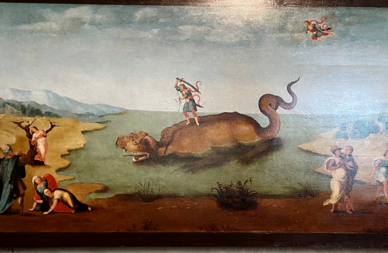

I chose Perseus Rescuing Andromeda because the sea monster immediately caught my attention. It made me laugh so much that my ribs started hurting, but at least it gave me some energy back because doing activities at midnight really makes you sleepy. The sea monster looked like a dog, so I immediately imagined the painting as a person walking or swimming their pet dog. My brother also wondered why the two people at the bottom left looked like that, and I joked that the dog was so cool that they fell to their knees. Anyway, I was having such a hard time choosing an artwork for MAPEH that I became so tired I started making up stories about what was happening in the paintings. I liked how this painting looked strange, dramatic, and interesting at the same time.
After learning more about the painting, I found out that it shows a story from Greek mythology. Andromeda (the girl that's tied to a tree) was going to be sacrificed to a sea monster, but Perseus came to rescue her. This made the painting more interesting because it is not only an artwork but also tells a complete story. The sea monster also makes the scene feel more dramatic and memorable.
Overall, I chose this artwork because it was the most memorable and funniest one I saw while looking through Renaissance paintings. Even though I first noticed it because of the funny-looking sea monster, I eventually became a bit interested in the story and details behind it. I learned that Renaissance artists often used stories from mythology as inspiration for their artworks. I also realized that paintings can be interpreted in different ways before you know the actual story behind them. In the end, Perseus Rescuing Andromeda stood out to me because it was both entertaining to look at and meaningful to learn about.